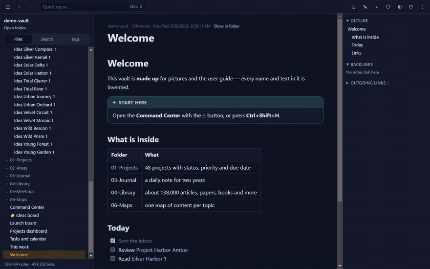
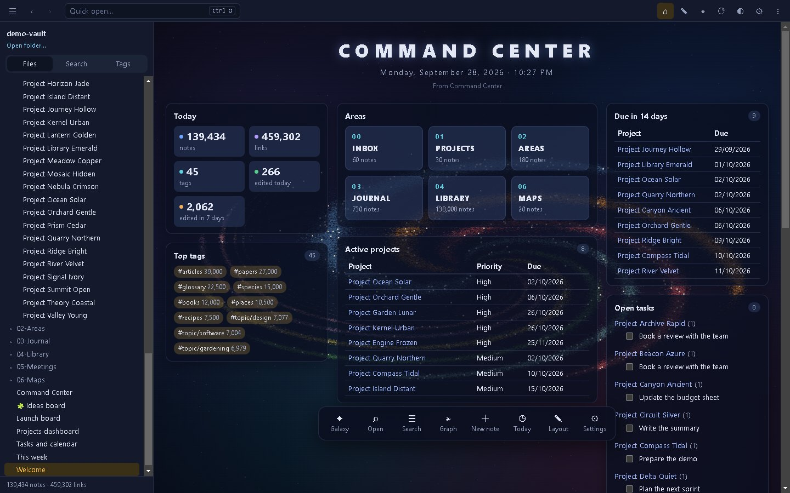
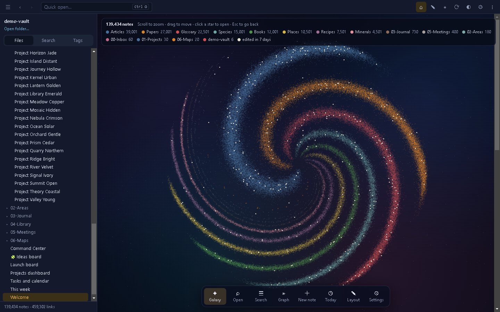
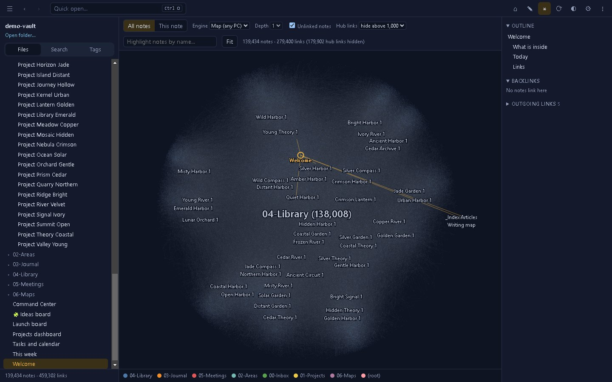
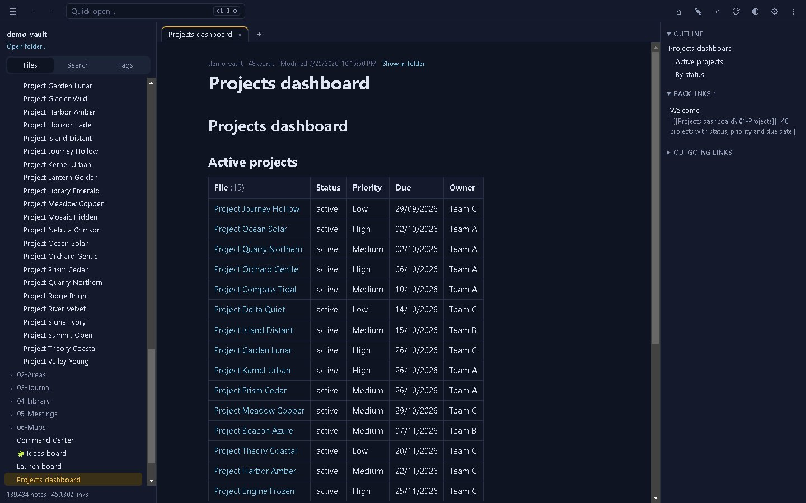
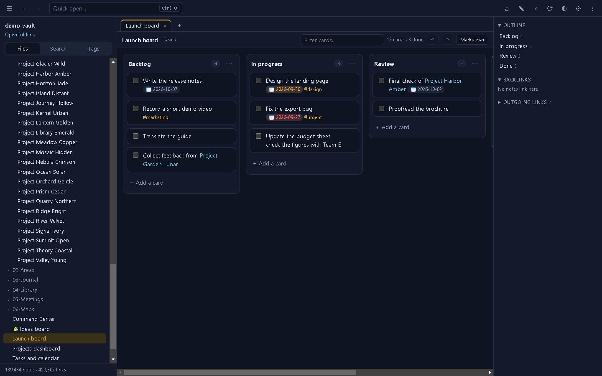
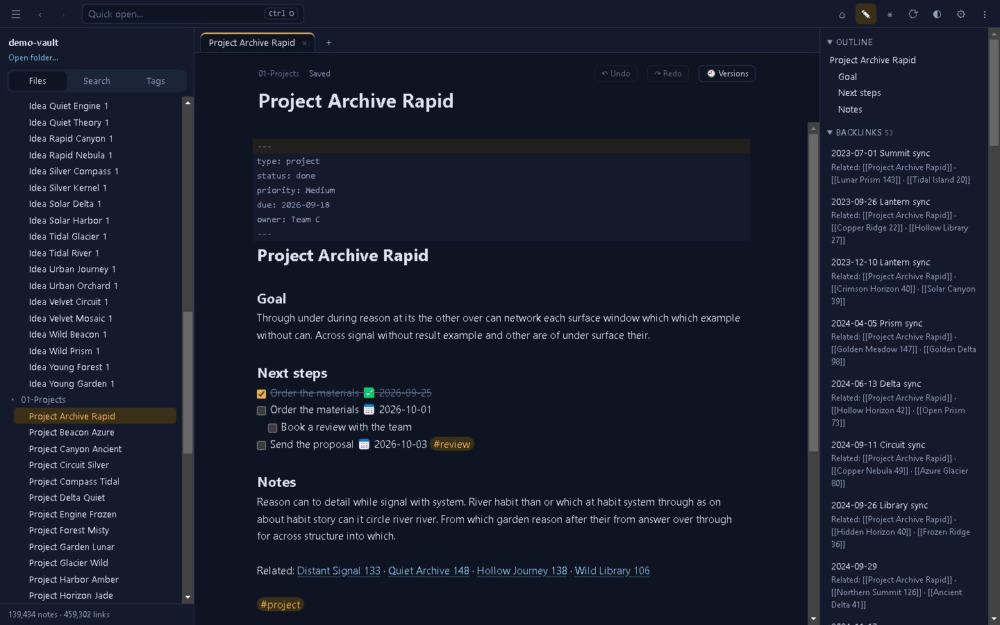
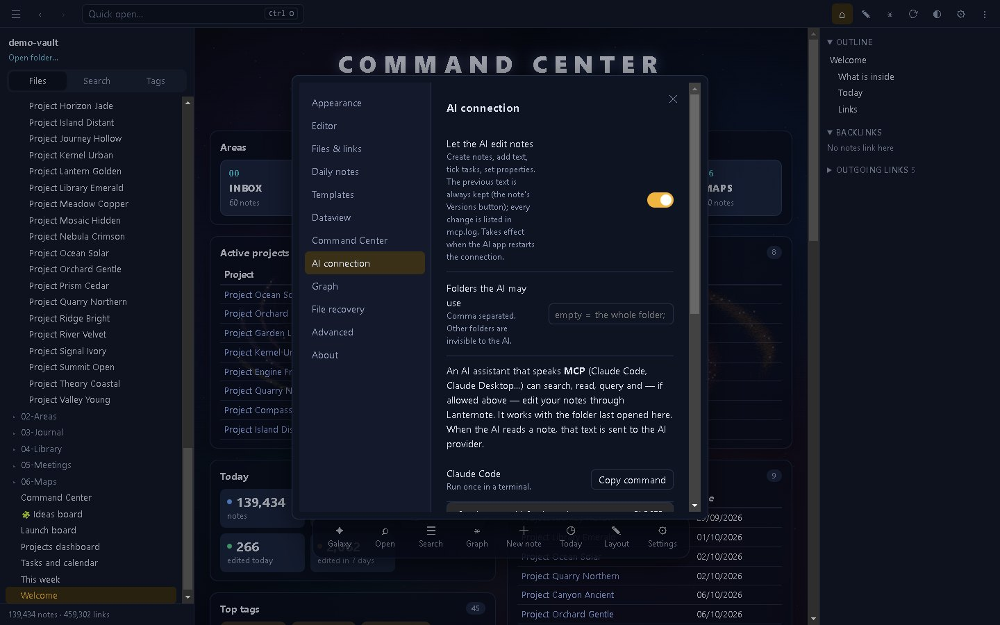

Command Center
One page with what matters today — projects, due dates, open tasks, a calendar and recent notes. It is built from an ordinary note you can edit.
A fast, private desktop app for very large folders of Markdown notes. Read, edit, search, query and map 200,000 notes on Windows, macOS or Linux — no account, no cloud, no graphics card needed.
Free for personal use · No installation needed · Works offline

Tested on a real library of 190,522 notes and 2.49 million links.
All stored as ordinary Markdown, readable in any text editor.
One page with what matters today — projects, due dates, open tasks, a calendar and recent notes. It is built from an ordinary note you can edit.

Every star is a note, every arm a folder, and notes you edited this week shine. Zoom in to read names, click a star to open it.

The Map engine lays out hundreds of thousands of notes once, in the background, and draws them like a digital map. A GPU engine is there when you have one.

Tables, lists, task lists and month calendars from dataview blocks — refreshed as notes change. Tick a task in the results and the note is updated on the spot.

Drag cards between lanes; boards are plain Markdown. Lay out ideas on an infinite canvas in the open JSON Canvas format.

Auto-save, per-note undo, link completion, pasted images, renames that fix links, and version history. If a file changes on disk while you edit, you choose which version to keep.

A real-world library of 190,522 notes, 2.49 million links, 728 MB.
| First open (no cache) | ≈ 17–19 s |
| Reopen | ≈ 1–2 s |
| Full-text search | 20–130 ms |
| Quick open by name | ≈ 25 ms |
| Live query over the whole library | ≈ 0.1 s |
| Galaxy — one frame | ≈ 1 ms |
Lanternote includes an MCP server. Claude Code, Claude Desktop and other MCP clients can search, read, run queries and list tasks — and, only if you allow it, create notes, edit passages and tick tasks. Every AI change keeps the previous text and is logged.
Claude Desktop: double-click lanternote.mcpb from the release and pick your notes folder — read-only until you allow editing. Claude Code and others: Settings → AI connection → Copy command. Limit the assistant to chosen folders.

Open source under the Apache License 2.0.